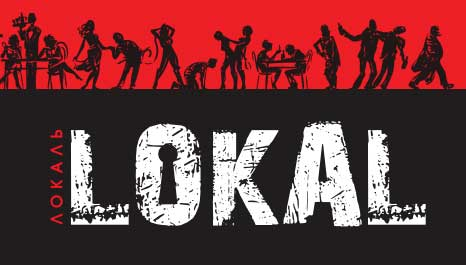
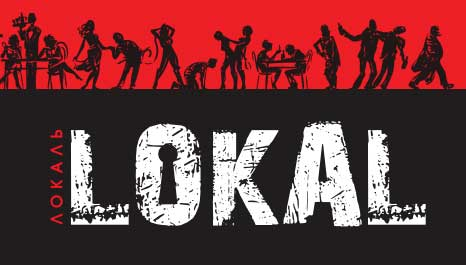

Про Львів
 Є місця, де сучасне легко і природно сплітається з минулим - саме таким є місто Львів. Самобутність і оригінальність Львова створили певний ідеальний образ міста - музею, де розташована переважна більшість пам'яток культури України. Однак не кількість пам'ятників на квадратний метр міської площі є вирішальною ...
Великим багатством Львова завжди була різноманітність етнічних, національних і релігійних громад. Протягом багатьох століть тут проживали українці, поляки, німці, євреї, вірмени, шотландці, волохи, угорці, чехи, греки. Зрозуміло, що таке співіснування не могло бути ідилічним, зате безперечним є взаємний вплив культур, вірувань, поглядів.
Завдяки розвитку торгівлі місто збагачувалось, на львівському Ринку зустрічалися купці зі Сходу і Заходу, Півночі і Півдня, поширюючи в Європі знання про наше місто. У Львові асимілювалися нащадки італійських, швейцарських і німецьких архітекторів, які приїжджали сюди на заробітки і створювали неповторні архітектурні ансамблі, храми, житлові будинки. Тут селилися вірменські та волоські купці, німецькі та чеські ремісники, службовці, вчителі.
Львівський центр міста з його чітким поділом на національні дільниці виявився горнилом, в якому сформувалося унікальне мультикультурне середовище.
Недарма як в Україні, так і в Польщі Львів також називають П'ємонтом - містом непокірним і волелюбним. У середині ХIХ століття Львів став центром Гаскали - єврейського просвітництва. Як відомо, найцікавіші явища завжди виникають на стику культур, а Львів ніколи не міг поскаржитися на брак відомих людей, що створювали видатні твори мистецтва, техніки, засновували культурні, господарські, економічні, спортивні товариства.
Є місця, де сучасне легко і природно сплітається з минулим - саме таким є місто Львів. Самобутність і оригінальність Львова створили певний ідеальний образ міста - музею, де розташована переважна більшість пам'яток культури України. Однак не кількість пам'ятників на квадратний метр міської площі є вирішальною ...
Великим багатством Львова завжди була різноманітність етнічних, національних і релігійних громад. Протягом багатьох століть тут проживали українці, поляки, німці, євреї, вірмени, шотландці, волохи, угорці, чехи, греки. Зрозуміло, що таке співіснування не могло бути ідилічним, зате безперечним є взаємний вплив культур, вірувань, поглядів.
Завдяки розвитку торгівлі місто збагачувалось, на львівському Ринку зустрічалися купці зі Сходу і Заходу, Півночі і Півдня, поширюючи в Європі знання про наше місто. У Львові асимілювалися нащадки італійських, швейцарських і німецьких архітекторів, які приїжджали сюди на заробітки і створювали неповторні архітектурні ансамблі, храми, житлові будинки. Тут селилися вірменські та волоські купці, німецькі та чеські ремісники, службовці, вчителі.
Львівський центр міста з його чітким поділом на національні дільниці виявився горнилом, в якому сформувалося унікальне мультикультурне середовище.
Недарма як в Україні, так і в Польщі Львів також називають П'ємонтом - містом непокірним і волелюбним. У середині ХIХ століття Львів став центром Гаскали - єврейського просвітництва. Як відомо, найцікавіші явища завжди виникають на стику культур, а Львів ніколи не міг поскаржитися на брак відомих людей, що створювали видатні твори мистецтва, техніки, засновували культурні, господарські, економічні, спортивні товариства.
Видатні місця
Площа Ринок
Площа Ринок – центр політичного, громадського, культурного і торгового життя міста протягом 500 років, серце Львова, історичний початок європеїзації України.
Оперний театр
Львівський Оперний театр – архітектурна перлина Львова у стилі неоренесансу (1901 рік), один з найгарніших театрів Європи.
Вірменська вулиця
Одна з найстаріших громад Львова – вірменська – віками створювала у місті осередок свого національного життя з унікальною архітектурою і неповторним духом.
Палац Потоцьких
Палац графів Потоцьких – велична будівля у стилі французького неоренесансу кінця XIX століття.
Каплиця Боїмів
Каплиця Боїмів – славнозвісна пам’ятка пізнього ренесансу, яка не має аналогів не лише в Україні, але й у європейській архітектурі.
Радимо відвідати

 
